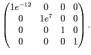

Next: The four parameter combinations Up: Minimisation concepts Previous: The gradient Contents Index
A few optimisation algorithms, which are among the most reliable for model-free analysis, additionally require the Hessian at current parameter values  . The Hessian is the matrix of second partial derivatives and is defined as
. The Hessian is the matrix of second partial derivatives and is defined as
|  | (theparentequation.2) |
As the order in which the partial derivatives are calculated is inconsequential the Hessian is symmetric.
The most powerful minimisation algorithm for model-free analysis - Newton optimisation - requires the value, gradient, and Hessian at the current parameter values.